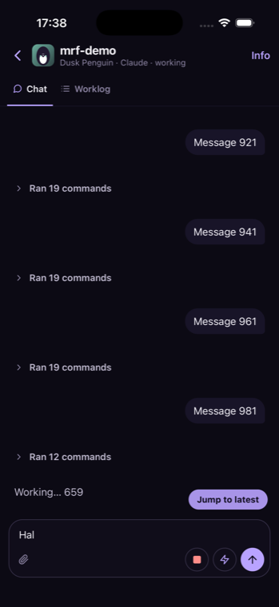

The problem
Every reconnect closed the keyboard and dropped your draft
~4 sbetween reconnects, on WiFi as well as 4G
“Hal”was all that survived of “Half a thought about the…”
 before
before
1beforeThe problem
before
1before